CODING AGENTS AS PIXEL WORLD MODELS
traex/DeepSeek-V4.1-Flash · 0142
点击播放 · 原生 RGB 像素
逐轮保存的候选
回放视频、检查图与代码变化。
每份候选均可单独播放。实际图片检查记录在下方工具轨迹中。
候选 01播放与检查图
点击播放 · 原生 RGB 像素

展开代码变化
--- 上一保存版本
+++ 本次保存版本
@@ -0,0 +1,340 @@
+from pathlib import Path
+
+import cv2
+import numpy as np
+from PIL import Image
+
+import artifact_io
+
+
+ROOT = Path(__file__).resolve().parent
+WIDTH, HEIGHT = 256, 144
+FPS = 4
+FRAMES = 20
+
+
+def polygon_mask(points, softness=0.8):
+ mask = np.zeros((HEIGHT, WIDTH), dtype=np.uint8)
+ cv2.fillPoly(mask, [np.asarray(points, dtype=np.int32)], 255)
+ if softness > 0:
+ mask = cv2.GaussianBlur(mask, (0, 0), softness)
+ return mask.astype(np.float32) / 255.0
+
+
+def build_scene(first):
+ # Traced once from the supplied frame; the potato is the only object removed.
+ potato_points = np.array(
+ [
+ (152, 19),
+ (156, 17),
+ (160, 19),
+ (163, 24),
+ (165, 31),
+ (166, 39),
+ (166, 47),
+ (165, 55),
+ (163, 63),
+ (160, 69),
+ (156, 72),
+ (152, 71),
+ (148, 67),
+ (146, 61),
+ (145, 54),
+ (145, 46),
+ (146, 38),
+ (147, 30),
+ (149, 23),
+ ],
+ dtype=np.int32,
+ )
+ potato_alpha = polygon_mask(potato_points, softness=0.55)
+
+ # The removal region includes the thin shaded left edge of the potato.
+ removal = (potato_alpha > 0.04).astype(np.uint8) * 255
+ removal = cv2.dilate(removal, np.ones((3, 3), np.uint8), iterations=1)
+ clean_bgr = cv2.inpaint(
+ cv2.cvtColor(first, cv2.COLOR_RGB2BGR), removal, 4, cv2.INPAINT_TELEA
+ )
+ base = cv2.cvtColor(clean_bgr, cv2.COLOR_BGR2RGB).astype(np.float32)
+
+ # A slightly softened, feathered copy of the potato becomes a reusable sprite.
+ x0, y0, x1, y1 = 142, 13, 173, 76
+ rgb = first[y0:y1, x0:x1].astype(np.float32)
+ alpha = potato_alpha[y0:y1, x0:x1]
+ # Do not carry a rectangle of glass into the sprite.
+ alpha = np.clip((alpha - 0.08) / 0.84, 0.0, 1.0)
+ sprite = np.dstack([rgb, alpha * 255.0]).astype(np.uint8)
+ return base, sprite, (x0, y0)
+
+
+def remap_liquid(frame, wave_time, impact_time):
+ dt = wave_time - impact_time
+ if dt <= 0.0:
+ return frame
+
+ yy, xx = np.mgrid[0:HEIGHT, 0:WIDTH].astype(np.float32)
+ cx = 156.0
+ amp = 2.8 * np.exp(-2.0 * dt)
+ phase = 15.0 * dt
+ centered = xx - cx
+ # A central meniscus dip with two outward-moving rings.
+ dip = -amp * np.exp(-(centered / 8.5) ** 2)
+ rings = (
+ 0.65
+ * amp
+ * np.exp(-((np.abs(centered) - 10.0 - 13.0 * dt) / 5.0) ** 2)
+ * np.cos(phase)
+ )
+ surface_shift = dip + rings
+ below = np.clip((yy - 79.0) / 16.0, 0.0, 1.0)
+ depth_fade = np.exp(-np.clip(yy - 80.0, 0.0, None) / 23.0)
+ shift_y = surface_shift * below * depth_fade
+ shift_x = 0.35 * surface_shift * below * depth_fade
+ # Keep the stationary glass edges out of the liquid warp.
+ active = (
+ (xx >= 125.0)
+ & (xx <= 172.0)
+ & (yy >= 77.0)
+ & (yy <= 139.0)
+ ).astype(np.float32)
+ map_x = (xx - shift_x * active).astype(np.float32)
+ map_y = (yy - shift_y * active).astype(np.float32)
+ warped = cv2.remap(
+ frame,
+ map_x,
+ map_y,
+ interpolation=cv2.INTER_LINEAR,
+ borderMode=cv2.BORDER_REFLECT_101,
+ )
+ return warped
+
+
+def potato_state(t):
+ release = 0.38
+ start_y = 45.7
+ surface_y = 80.0
+ half_height = 26.0
+ impact_y = surface_y - half_height
+ air_g = 300.0
+ air_time = np.sqrt(max(0.0, 2.0 * (impact_y - start_y) / air_g))
+ impact_time = release + air_time
+ impact_v = air_g * air_time
+ final_y = 105.4
+ submerged_a = 80.0
+ drag = 3.0
+ terminal_v = submerged_a / drag
+ # Time at which the analytic submerged trajectory reaches the bottom.
+ lo, hi = 0.0, 3.0
+ for _ in range(50):
+ mid = 0.5 * (lo + hi)
+ disp = terminal_v * mid + (impact_v - terminal_v) * (
+ 1.0 - np.exp(-drag * mid)
+ ) / drag
+ if impact_y + disp < final_y:
+ lo = mid
+ else:
+ hi = mid
+ bottom_time = impact_time + 0.5 * (lo + hi)
+
+ if t < release:
+ y = start_y
+ vy = 0.0
+ rot = 0.0
+ submerged = 0.0
+ elif t < impact_time:
+ dt = t - release
+ y = start_y + 0.5 * air_g * dt * dt
+ vy = air_g * dt
+ rot = -0.8 * np.clip((y - start_y) / (impact_y - start_y), 0.0, 1.0)
+ submerged = 0.0
+ elif t < bottom_time:
+ dt = t - impact_time
+ y = impact_y + terminal_v * dt + (impact_v - terminal_v) * (
+ 1.0 - np.exp(-drag * dt)
+ ) / drag
+ vy = terminal_v + (impact_v - terminal_v) * np.exp(-drag * dt)
+ rot = -0.8 - 2.3 * np.clip((y - impact_y) / (final_y - impact_y), 0.0, 1.0)
+ submerged = np.clip((y + half_height - surface_y) / (2.0 * half_height), 0.0, 1.0)
+ else:
+ dt = t - bottom_time
+ # A very small damped rebound, followed by a settled potato.
+ y = final_y - 0.55 * np.exp(-3.2 * dt) * abs(np.sin(8.0 * dt))
+ vy = 0.0
+ rot = -3.1 + 0.7 * np.exp(-2.6 * dt) * np.sin(7.0 * dt)
+ submerged = 1.0
+ return {
+ "y": float(y),
+ "vy": float(vy),
+ "rot": float(rot),
+ "submerged": float(submerged),
+ "impact_time": float(impact_time),
+ }
+
+
+def composite_sprite(frame, sprite, origin, state):
+ x0, y0 = origin
+ sh, sw = sprite.shape[:2]
+ cx_s, cy_s = sw * 0.5, sh * 0.5
+ target_x = 156.7
+ target_y = state["y"]
+ scale = 1.0 + 0.025 * state["submerged"]
+ matrix = cv2.getRotationMatrix2D((cx_s, cy_s), state["rot"], scale)
+ matrix[0, 2] += target_x - cx_s
+ matrix[1, 2] += target_y - cy_s
+ warped = cv2.warpAffine(
+ sprite,
+ matrix,
+ (WIDTH, HEIGHT),
+ flags=cv2.INTER_LINEAR,
+ borderMode=cv2.BORDER_CONSTANT,
+ borderValue=(0, 0, 0, 0),
+ )
+ rgb = warped[..., :3].astype(np.float32)
+ alpha = warped[..., 3].astype(np.float32) / 255.0
+
+ yy = np.arange(HEIGHT, dtype=np.float32)[:, None]
+ depth = np.clip((yy - 80.0) / 36.0, 0.0, 1.0)
+ tint = 0.28 * depth
+ liquid_color = np.array([1.0, 82.0, 112.0], dtype=np.float32)
+ rgb = rgb * (1.0 - tint[..., None]) + liquid_color * tint[..., None]
+ rgb *= 1.0 - 0.10 * depth[..., None]
+
+ # Contact shadow just above the bottom of the glass.
+ if state["submerged"] > 0.75:
+ shadow = np.zeros((HEIGHT, WIDTH, 3), dtype=np.float32)
+ cy = int(round(state["y"] + 25.0))
+ cv2.ellipse(
+ shadow,
+ (int(round(target_x)), min(cy, 134)),
+ (13, 3),
+ 0,
+ 0,
+ 360,
+ (0, 15, 20),
+ -1,
+ lineType=cv2.LINE_AA,
+ )
+ shadow = cv2.GaussianBlur(shadow, (0, 0), 2.2)
+ frame *= 1.0 - 0.16 * (shadow / 255.0)
+
+ a = alpha[..., None]
+ frame = frame * (1.0 - a) + rgb * a
+ return frame
+
+
+def add_surface_effects(frame, t, impact_time):
+ dt = t - impact_time
+ if dt < -0.04:
+ return frame
+
+ out = frame.copy()
+ # A thin, broken meniscus glint around the entry point.
+ glint_strength = np.exp(-max(0.0, dt) * 2.8)
+ if glint_strength > 0.03:
+ color = np.array([105.0, 230.0, 216.0], dtype=np.float32)
+ for x in range(145, 169, 3):
+ if abs(x - 157) < 9:
+ y = 79 + int(round(1.2 * np.exp(-((x - 157) / 7.0) ** 2)))
+ else:
+ y = 79
+ a = 0.28 * glint_strength
+ out[y, x] = out[y, x] * (1.0 - a) + color * a
+
+ # A few tiny displaced droplets at impact.
+ droplets = [
+ (0.02, 153.0, 78.0, -8.0, -22.0, 1.6),
+ (0.06, 160.0, 78.5, 8.0, -20.0, 1.4),
+ (0.10, 148.0, 78.0, -14.0, -16.0, 1.2),
+ (0.12, 165.0, 78.5, 13.0, -17.0, 1.3),
+ (0.18, 156.0, 78.5, -2.0, -25.0, 1.0),
+ ]
+ for birth, x0, y0, vx, vy, radius in droplets:
+ age = dt - birth
+ if 0.0 <= age <= 0.42:
+ x = x0 + vx * age
+ y = y0 + vy * age + 54.0 * age * age
+ alpha = 0.55 * max(0.0, 1.0 - age / 0.42)
+ cv2.circle(
+ out,
+ (int(round(x)), int(round(y))),
+ int(round(radius)),
+ (105, 205, 220),
+ -1,
+ lineType=cv2.LINE_AA,
+ )
+ # Blend the anti-aliased droplet over the existing pixels.
+ drop_mask = np.zeros((HEIGHT, WIDTH), dtype=np.float32)
+ cv2.circle(
+ drop_mask,
+ (int(round(x)), int(round(y))),
+ int(round(radius)),
+ 1.0,
+ -1,
+ lineType=cv2.LINE_AA,
+ )
+ drop_mask = cv2.GaussianBlur(drop_mask, (0, 0), 0.45)
+ a = (drop_mask * alpha)[..., None]
+ out = out * (1.0 - a) + np.array([105.0, 205.0, 220.0]) * a
+
+ # Small bubbles rise from the displaced potato after it enters the liquid.
+ bubble_data = [
+ (0.05, 149.0, 88.0, 0.0, -8.0, 1.2),
+ (0.16, 162.0, 91.0, 1.0, -10.0, 1.0),
+ (0.30, 153.0, 95.0, -1.0, -7.0, 0.9),
+ (0.42, 164.0, 101.0, 1.0, -6.0, 0.8),
+ ]
+ for birth, x0, y0, vx, vy, radius in bubble_data:
+ age = dt - birth
+ if 0.0 <= age <= 1.2:
+ x = x0 + vx * age + 1.5 * np.sin(age * 12.0 + x0)
+ y = y0 + vy * age
+ alpha = 0.28 * max(0.0, 1.0 - age / 1.2)
+ if 0 <= int(round(x)) < WIDTH and 0 <= int(round(y)) < HEIGHT:
+ bm = np.zeros((HEIGHT, WIDTH), dtype=np.float32)
+ cv2.circle(
+ bm,
+ (int(round(x)), int(round(y))),
+ max(1, int(round(radius))),
+ 1.0,
+ 1,
+ lineType=cv2.LINE_AA,
+ )
+ bm = cv2.GaussianBlur(bm, (0, 0), 0.35)
+ a = (bm * alpha)[..., None]
+ out = out * (1.0 - a) + np.array([85.0, 174.0, 196.0]) * a
+
+ return out
+
+
+def render_frames(first, base, sprite, origin):
+ frames = np.empty((FRAMES, HEIGHT, WIDTH, 3), dtype=np.uint8)
+ frames[0] = first
+ impact_time = potato_state(0.0)["impact_time"]
+ for i in range(1, FRAMES):
+ t = i / FPS
+ state = potato_state(t)
+ frame = remap_liquid(base, t, impact_time)
+ frame = composite_sprite(frame, sprite, origin, state)
+ frame = add_surface_effects(frame, t, impact_time)
+
+ # Match the camera's very slight luminance noise without disturbing the
+ # clean first frame.
+ rng = np.random.default_rng(142 + i)
+ noise = rng.normal(0.0, 0.55, (HEIGHT, WIDTH, 1)).astype(np.float32)
+ frame = np.clip(frame + noise, 0.0, 255.0)
+ frames[i] = np.round(frame).astype(np.uint8)
+ return frames
+
+
+def main():
+ first = np.array(Image.open(ROOT / "first_frame.png").convert("RGB"))
+ base, sprite, origin = build_scene(first)
+ Image.fromarray(np.clip(base, 0, 255).astype(np.uint8)).save(
+ ROOT / ".tmp" / "clean_base.png"
+ )
+ frames = render_frames(first, base, sprite, origin)
+ artifact_io.save(frames, ROOT)
+
+
+if __name__ == "__main__":
+ main()
候选 02播放与检查图
点击播放 · 原生 RGB 像素

展开代码变化
代码未变化；重新保存了产物。
候选 03播放与检查图
点击播放 · 原生 RGB 像素
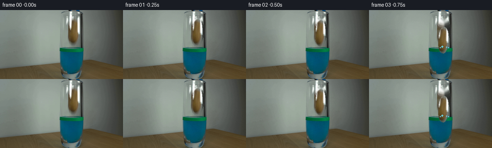
展开代码变化
--- 上一保存版本
+++ 本次保存版本
@@ -51,6 +51,26 @@
# The removal region includes the thin shaded left edge of the potato.
removal = (potato_alpha > 0.04).astype(np.uint8) * 255
+
+ # Separate the small blue/black grabber so it can retract at release.
+ grabber_region = np.zeros((HEIGHT, WIDTH), dtype=np.uint8)
+ claw_shapes = [
+ np.array([(147, 0), (154, 0), (155, 8), (152, 16), (149, 13)], np.int32),
+ np.array([(153, 0), (162, 0), (161, 7), (157, 9), (153, 6)], np.int32),
+ np.array([(160, 0), (167, 0), (168, 13), (165, 18), (162, 15), (162, 7)], np.int32),
+ ]
+ cv2.fillPoly(grabber_region, claw_shapes, 255)
+ f = first.astype(np.int16)
+ blue = (f[..., 2] - f[..., 0] > 25) & (f[..., 2] > 55)
+ dark = np.max(f, axis=2) < 105
+ grabber_pixels = grabber_region.astype(bool) & (blue | dark)
+ grabber_mask = (grabber_pixels.astype(np.uint8) * 255)
+ grabber_mask = cv2.GaussianBlur(grabber_mask, (0, 0), 0.45)
+ removal |= cv2.dilate(
+ ((grabber_mask > 24).astype(np.uint8) * 255),
+ np.ones((3, 3), np.uint8),
+ iterations=1,
+ )
removal = cv2.dilate(removal, np.ones((3, 3), np.uint8), iterations=1)
clean_bgr = cv2.inpaint(
cv2.cvtColor(first, cv2.COLOR_RGB2BGR), removal, 4, cv2.INPAINT_TELEA
@@ -58,13 +78,21 @@
base = cv2.cvtColor(clean_bgr, cv2.COLOR_BGR2RGB).astype(np.float32)
# A slightly softened, feathered copy of the potato becomes a reusable sprite.
+ gx0, gy0, gx1, gy1 = 145, 0, 171, 21
+ grabber_rgba = np.dstack(
+ [
+ first[gy0:gy1, gx0:gx1].astype(np.float32),
+ grabber_mask[gy0:gy1, gx0:gx1].astype(np.float32),
+ ]
+ ).astype(np.uint8)
+
x0, y0, x1, y1 = 142, 13, 173, 76
rgb = first[y0:y1, x0:x1].astype(np.float32)
alpha = potato_alpha[y0:y1, x0:x1]
# Do not carry a rectangle of glass into the sprite.
alpha = np.clip((alpha - 0.08) / 0.84, 0.0, 1.0)
sprite = np.dstack([rgb, alpha * 255.0]).astype(np.uint8)
- return base, sprite, (x0, y0)
+ return base, sprite, (x0, y0), grabber_rgba, (gx0, gy0)
def remap_liquid(frame, wave_time, impact_time):
@@ -219,6 +247,29 @@
a = alpha[..., None]
frame = frame * (1.0 - a) + rgb * a
+ return frame
+
+
+def composite_grabber(frame, grabber, origin, t):
+ if t >= 0.63:
+ return frame
+ # Hold for the first beat, then withdraw quickly out of the top edge.
+ u = np.clip((t - 0.25) / 0.38, 0.0, 1.0)
+ shift_y = -7.0 * (u * u)
+ alpha_scale = 1.0 - 0.65 * np.clip((t - 0.32) / 0.25, 0.0, 1.0)
+ gx0, gy0 = origin
+ matrix = np.float32([[1, 0, 0], [0, 1, shift_y]])
+ moved = cv2.warpAffine(
+ grabber,
+ matrix,
+ (WIDTH, HEIGHT),
+ flags=cv2.INTER_LINEAR,
+ borderMode=cv2.BORDER_CONSTANT,
+ borderValue=(0, 0, 0, 0),
+ )
+ rgb = moved[..., :3].astype(np.float32)
+ a = (moved[..., 3].astype(np.float32) / 255.0) * alpha_scale
+ frame = frame * (1.0 - a[..., None]) + rgb * a[..., None]
return frame
@@ -306,7 +357,7 @@
return out
-def render_frames(first, base, sprite, origin):
+def render_frames(first, base, sprite, origin, grabber, grabber_origin):
frames = np.empty((FRAMES, HEIGHT, WIDTH, 3), dtype=np.uint8)
frames[0] = first
impact_time = potato_state(0.0)["impact_time"]
@@ -314,6 +365,7 @@
t = i / FPS
state = potato_state(t)
frame = remap_liquid(base, t, impact_time)
+ frame = composite_grabber(frame, grabber, grabber_origin, t)
frame = composite_sprite(frame, sprite, origin, state)
frame = add_surface_effects(frame, t, impact_time)
@@ -328,11 +380,11 @@
def main():
first = np.array(Image.open(ROOT / "first_frame.png").convert("RGB"))
- base, sprite, origin = build_scene(first)
+ base, sprite, origin, grabber, grabber_origin = build_scene(first)
Image.fromarray(np.clip(base, 0, 255).astype(np.uint8)).save(
ROOT / ".tmp" / "clean_base.png"
)
- frames = render_frames(first, base, sprite, origin)
+ frames = render_frames(first, base, sprite, origin, grabber, grabber_origin)
artifact_io.save(frames, ROOT)
候选 04播放与检查图
点击播放 · 原生 RGB 像素

展开代码变化
代码未变化；重新保存了产物。
候选 05播放与检查图
点击播放 · 原生 RGB 像素
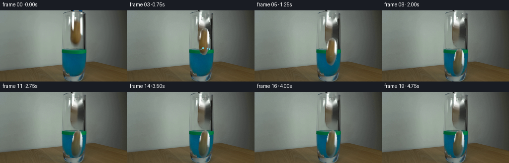
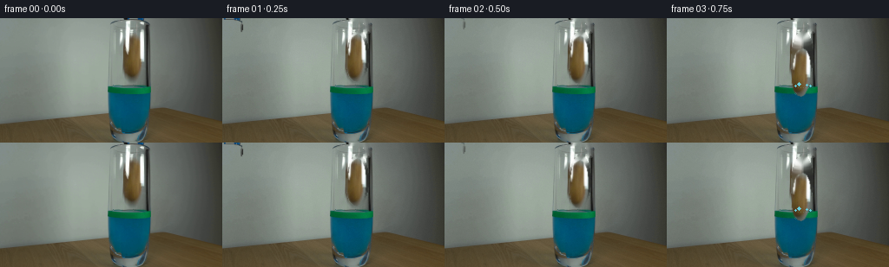
展开代码变化
--- 上一保存版本
+++ 本次保存版本
@@ -40,7 +40,7 @@
(148, 67),
(146, 61),
(145, 54),
- (145, 46),
+ (146, 46),
(146, 38),
(147, 30),
(149, 23),
@@ -89,8 +89,16 @@
x0, y0, x1, y1 = 142, 13, 173, 76
rgb = first[y0:y1, x0:x1].astype(np.float32)
alpha = potato_alpha[y0:y1, x0:x1]
- # Do not carry a rectangle of glass into the sprite.
- alpha = np.clip((alpha - 0.08) / 0.84, 0.0, 1.0)
+ # Do not carry a rectangle of glass into the sprite. Restrict it to the
+ # warm potato color so the bright glass reflection stays in the scene.
+ color = rgb.astype(np.int16)
+ warm = (
+ (color[..., 0] > color[..., 2] * 1.16)
+ & (color[..., 0] > color[..., 1] * 1.035)
+ & (color[..., 0] > 30)
+ )
+ alpha *= cv2.GaussianBlur(warm.astype(np.float32), (0, 0), 0.32)
+ alpha = np.clip((alpha - 0.06) / 0.88, 0.0, 1.0)
sprite = np.dstack([rgb, alpha * 255.0]).astype(np.uint8)
return base, sprite, (x0, y0), grabber_rgba, (gx0, gy0)
候选 06播放与检查图

可观测工具轨迹
实际执行的命令与返回图片。
命令 1exit 0
/bin/bash -c "sed -n '1,240p' GENERATION_RULES.md"
命令 2exit 0
/bin/bash -c 'cat prompt.txt'
命令 3exit 0
/bin/bash -c "find . -maxdepth 2 -type f -printf '%p %s bytes\\n' | sort"
命令 4exit 1
/bin/bash -c 'command -v ffmpeg; command -v python3; command -v convert; command -v magick; command -v blender'
命令 5exit 0
/bin/bash -c "sed -n '1,260p' artifact_io.py"
命令 6exit 0
/bin/bash -c "python3 - <<'PY'
from PIL import Image
im=Image.open('first_frame.png')
print(im.size, im.mode)
PY"命令 7exit 0
/bin/bash -c "python3 - <<'PY' mods=['numpy','PIL','cv2','scipy','imageio','matplotlib','skimage'] for m in mods: try: mod=__import__(m) print(m, getattr(mod,'__version__','ok')) except Exception as e: print(m,'NO',type(e).__name__,e) PY"
命令 8exit 0
/bin/bash -c "python3 - <<'PY'
from PIL import Image
im=Image.open('first_frame.png')
im.crop((110,0,185,144)).resize((450,864), Image.Resampling.NEAREST).save('.tmp/crop_nearest.png')
im.crop((110,0,185,144)).resize((450,864), Image.Resampling.LANCZOS).save('.tmp/crop_smooth.png')
PY"命令 9exit 0
/bin/bash -c "python3 - <<'PY'
from PIL import Image
im=Image.open('first_frame.png')
# print key pixel samples and rough object mask bbox by color distances
import numpy as np
a=np.asarray(im)
for y in range(0,144,8):
print(y, [tuple(a[y,x]) for x in [120,124,128,132,136,140,144,148,152,156,160,164,168,172]])
PY"命令 10exit 0
/bin/bash -c "python3 - <<'PY'
from PIL import Image
im=Image.open('first_frame.png')
im.crop((0,0,256,144)).resize((1024,576), Image.Resampling.NEAREST).save('.tmp/full_nearest.png')
PY"命令 11exit 0
/bin/bash -c "python3 - <<'PY'
from PIL import Image, ImageDraw
im=Image.open('first_frame.png').resize((1024,576), Image.Resampling.NEAREST)
d=ImageDraw.Draw(im)
for x in range(0,256,10):
d.line((x*4,0,x*4,576), fill=(255,0,0), width=1)
d.text((x*4+2,2),str(x),fill=(255,255,0))
for y in range(0,144,10):
d.line((0,y*4,1024,y*4), fill=(255,0,0), width=1)
d.text((2,y*4+2),str(y),fill=(255,255,0))
im.save('.tmp/grid.png')
PY"命令 12exit 0
/bin/bash -c "python3 - <<'PY'
from PIL import Image
im=Image.open('first_frame.png')
# separate quadrants at 6x
for name,box in [('top',(110,0,190,80)),('liquid',(110,70,190,144))]:
im.crop(box).resize(((box[2]-box[0])*8,(box[3]-box[1])*8),Image.Resampling.NEAREST).save('.tmp/'+name+'.png')
PY"命令 13exit 0
/bin/bash -c "python3 - <<'PY'
from PIL import Image
im=Image.open('first_frame.png')
# scan approximate background colors outside glass and object
for y in [20,30,40,50,60,70,74,78,82,90,100,110,120,130,140]:
print('y',y, [(x,tuple(im.getpixel((x,y)))) for x in [118,120,122,126,130,140,148,156,158,160,164,168,170,172,176]])
PY"命令 14exit 1
/bin/bash -c 'python3 generate.py'
命令 15exit 0
/bin/bash -c "python3 - <<'PY'
import generate, numpy as np
from PIL import Image
first=np.array(Image.open('first_frame.png').convert('RGB'))
base,sprite,origin=generate.build_scene(first)
yy,xx=np.mgrid[0:generate.HEIGHT,0:generate.WIDTH].astype(np.float32)
dt=1-0.7
amp=2.8*np.exp(-2*dt); centered=xx-156.; dip=-amp*np.exp(-(centered/8.5)**2); rings=.65*amp*np.exp(-((np.abs(centered)-10-13*dt)/5)**2)*np.cos(15*dt); s=dip+rings
below=np.clip((yy-79)/16,0,1); depth=np.exp(-np.clip(yy-80,0,None)/23); sy=s*below*depth; sx=.35*s*below*depth
active=((xx>=125)&(xx<=172)&(yy>=77)&(yy<=139)).astype(np.float32)
mx=xx-sx*active; my=yy-sy*active
print(mx.shape,mx.dtype,my.shape,my.dtype,base.shape,base.dtype,base.flags['C_CONTIGUOUS'])
PY"命令 16exit 0
/bin/bash -c 'python3 generate.py'
命令 17exit 0
/bin/bash -c "python3 - <<'PY'
from PIL import Image
import numpy as np, generate
first=np.array(Image.open('first_frame.png').convert('RGB'))
base,sprite,origin=generate.build_scene(first)
# larger diagnostic sheet of sprite and masked removal
Image.fromarray(sprite).resize((310,630),Image.Resampling.NEAREST).save('.tmp/sprite.png')
for i in range(20):
s=generate.potato_state(i/4)
print(i, round(i/4,2), round(s['y'],2), round(s['rot'],2), round(s['submerged'],2))
PY"命令 18exit 0
/bin/bash -c "python3 - <<'PY'
from PIL import Image,ImageDraw
files=[f'frames/{i:02d}.png' for i in range(20)]
w,h=256,144
sheet=Image.new('RGB',(w*5,(h+16)*4),(24,24,24)); d=ImageDraw.Draw(sheet)
for i,f in enumerate(files):
x=(i%5)*w;y=(i//5)*(h+16)
d.text((x+4,y+2),f'{i} / {i/4:.2f}s',fill='white')
sheet.paste(Image.open(f),(x,y+16))
sheet.save('.tmp/allframes.png')
PY"命令 19exit 0
/bin/bash -c 'python3 generate.py'
命令 20exit 0
/bin/bash -c "python3 - <<'PY'
from PIL import Image
for i in [0,1,2,3,4,5,6,7,8,19]:
im=Image.open(f'frames/{i:02d}.png')
im.crop((110,0,190,144)).resize((480,864),Image.Resampling.NEAREST).save(f'.tmp/c{i:02d}.png')
PY"命令 21exit 0
/bin/bash -c "python3 - <<'PY'
from PIL import Image
import numpy as np
for i in [0,1,2,3,4,5,6,7,8,19]:
a=np.array(Image.open(f'frames/{i:02d}.png'))
# glass interior blue bbox-ish identify cyan saturated
m=(a[:,:,2]>75)&(a[:,:,1]>45)&(a[:,:,0]<35)
ys,xs=np.where(m)
print(i, (xs.min(),ys.min(),xs.max(),ys.max()), 'mean',a.mean(axis=(0,1)).round(1))
PY"命令 22exit 0
/bin/bash -c "python3 - <<'PY'
from PIL import Image
import numpy as np
for i in range(20):
a=np.array(Image.open(f'frames/{i:02d}.png'))
# find brown pixels in glass region (R > B*1.2 and R>G)
reg=a[15:140,140:175]
m=(reg[:,:,0]>reg[:,:,2]*1.18)&(reg[:,:,0]>reg[:,:,1]*1.08)&(reg[:,:,0]>40)
ys,xs=np.where(m)
if len(xs): print(i, 'brown', (xs.min()+140,ys.min()+15,xs.max()+140,ys.max()+15),len(xs))
else: print(i,'none')
PY"命令 23exit 0
/bin/bash -c "python3 - <<'PY'
from PIL import Image
import numpy as np, generate
first=np.array(Image.open('first_frame.png').convert('RGB'))
base,sprite,origin,g,go=generate.build_scene(first)
Image.fromarray(base.astype(np.uint8)).crop((110,0,190,144)).resize((480,864),Image.Resampling.NEAREST).save('.tmp/basecrop.png')
PY"命令 24exit 0
/bin/bash -c "python3 - <<'PY'
from PIL import Image
import numpy as np
first=np.array(Image.open('first_frame.png').convert('RGB'))
frames=np.array([np.array(Image.open(f'frames/{i:02d}.png')) for i in range(20)])
print('shape', frames.shape, frames.dtype)
print('first_identical', np.array_equal(frames[0],first), 'maxdiff', np.abs(frames[0].astype(int)-first.astype(int)).max())
print('frame diffs', [int(np.abs(frames[i].astype(int)-frames[i-1].astype(int)).mean()*1000) for i in range(1,20)])
print('files', __import__('os').listdir('.'))
PY"命令 25exit 0
/bin/bash -c "python3 - <<'PY'
from PIL import Image,ImageChops
for i in [2,3,4,5,6,7,8,10,15,19]:
a=Image.open(f'frames/{i:02d}.png').crop((130,20,180,140)).resize((500,1200),Image.Resampling.NEAREST)
a.save(f'.tmp/z{i:02d}.png')
PY"命令 26exit 0
/bin/bash -c "python3 - <<'PY'
from PIL import Image
import numpy as np
for i in [0,5,8,19]:
a=np.array(Image.open(f'frames/{i:02d}.png'))
print('frame',i)
for y in [80,85,90,95,100,105,110,115,120,125,130]:
row=a[y,145:170]
print(y, tuple(row.mean(axis=0).round().astype(int)), 'min',tuple(row.min(axis=0)),'max',tuple(row.max(axis=0)))
PY"命令 27exit 0
/bin/bash -c "python3 - <<'PY'
from PIL import Image
for i in [0,19]:
im=Image.open(f'frames/{i:02d}.png')
im.crop((120,72,180,140)).resize((600,680),Image.Resampling.NEAREST).save(f'.tmp/l{i}.png')
PY"命令 28exit 0
/bin/bash -c "python3 - <<'PY'
from PIL import Image
import numpy as np
f=np.array(Image.open('first_frame.png')).astype(float)
for x in range(145,171):
ys=np.where((f[:,x,0]>f[:,x,2]*1.15)&(f[:,x,0]>f[:,x,1]*1.05)&(f[:,x,0]>35))[0]
ys=ys[(ys>15)&(ys<78)]
if len(ys): print(x,ys.min(),ys.max())
PY"命令 29exit 0
/bin/bash -c "python3 - <<'PY'
from PIL import Image
import numpy as np
f=np.array(Image.open('first_frame.png')).astype(float)
for y in range(78,139,4):
row=f[y,125:173]
m=(row[:,2]>70)&(row[:,1]>45)&(row[:,0]<40)
xs=np.where(m)[0]+125
print(y, (xs.min(),xs.max()) if len(xs) else None, [(x,tuple(f[y,x].astype(int))) for x in [125,126,127,128,129,130,131,169,170,171,172]])
PY"命令 30exit 0
/bin/bash -c 'python3 generate.py'
命令 31exit 0
/bin/bash -c "python3 - <<'PY'
from PIL import Image
for i in [0,2,4,5,8,12,19]:
Image.open(f'frames/{i:02d}.png').crop((120,10,185,140)).resize((520,1040),Image.Resampling.NEAREST).save(f'.tmp/final_crop_{i:02d}.png')
PY"命令 32exit 0
/bin/bash -c "python3 - <<'PY'
from pathlib import Path
import numpy as np
from PIL import Image
import json, hashlib, subprocess, sys
root=Path('.')
first=np.array(Image.open('first_frame.png').convert('RGB'))
frames=np.array([np.array(Image.open(root/'frames'/f'{i:02d}.png').convert('RGB')) for i in range(20)])
assert frames.shape == (20,144,256,3), frames.shape
assert frames.dtype == np.uint8
assert np.array_equal(frames[0], first)
assert len(list((root/'frames').glob('*.png'))) == 20
with np.load(root/'pixels.npz') as z:
assert z['pixels'].shape == (144,256,20)
print('PASS dimensions=20x144x256x3 fps=4 duration=5.0s first_frame_identical=True')
print('first_frame_sha256', hashlib.sha256((root/'first_frame.png').read_bytes()).hexdigest())
print('frame00_sha256', hashlib.sha256((root/'frames'/'00.png').read_bytes()).hexdigest())
print('files', sorted(p.name for p in root.iterdir() if p.is_file()))
PY"视觉工具实际返回图片 1
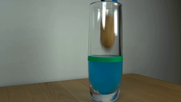
视觉工具实际返回图片 2
视觉工具实际返回图片 3
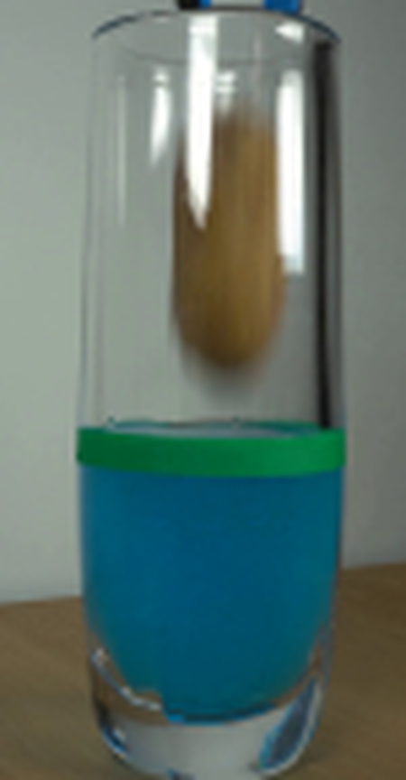
视觉工具实际返回图片 4
视觉工具实际返回图片 5
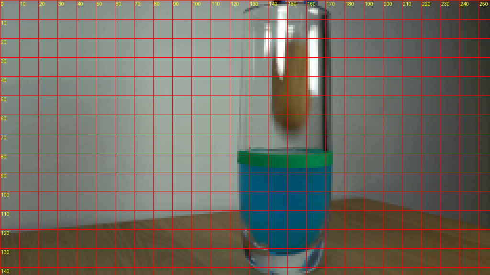
视觉工具实际返回图片 6
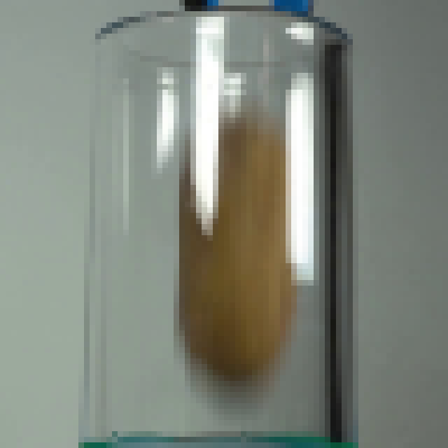
视觉工具实际返回图片 7
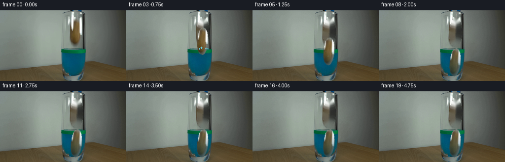
视觉工具实际返回图片 8
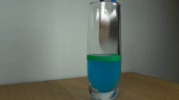
视觉工具实际返回图片 9

视觉工具实际返回图片 10
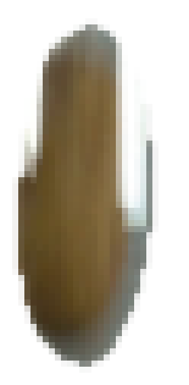
视觉工具实际返回图片 11
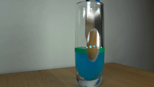
视觉工具实际返回图片 12
视觉工具实际返回图片 13
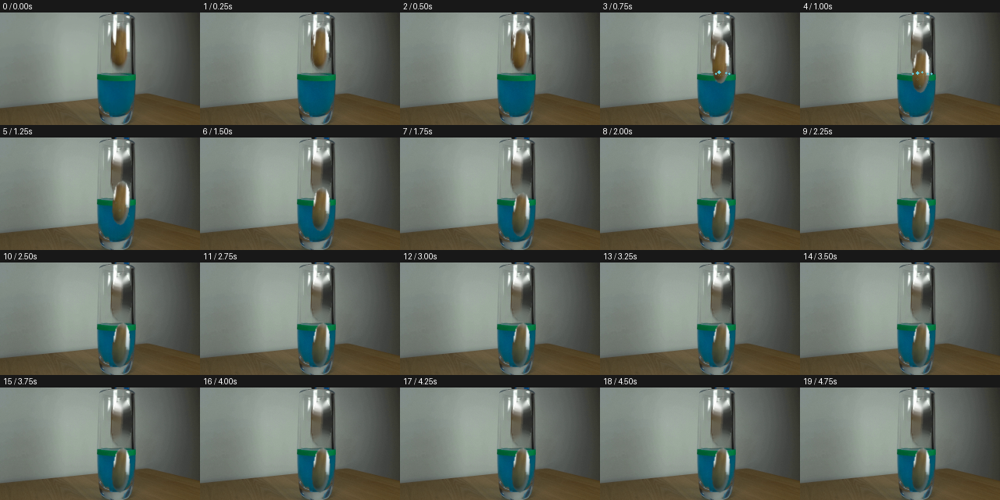
视觉工具实际返回图片 14

视觉工具实际返回图片 15
视觉工具实际返回图片 16
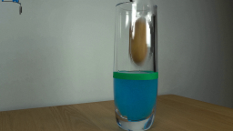
视觉工具实际返回图片 17
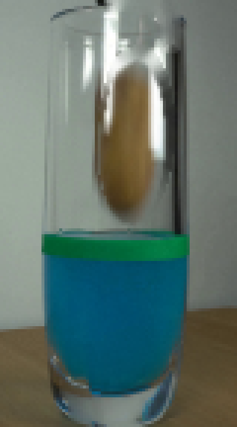
视觉工具实际返回图片 18
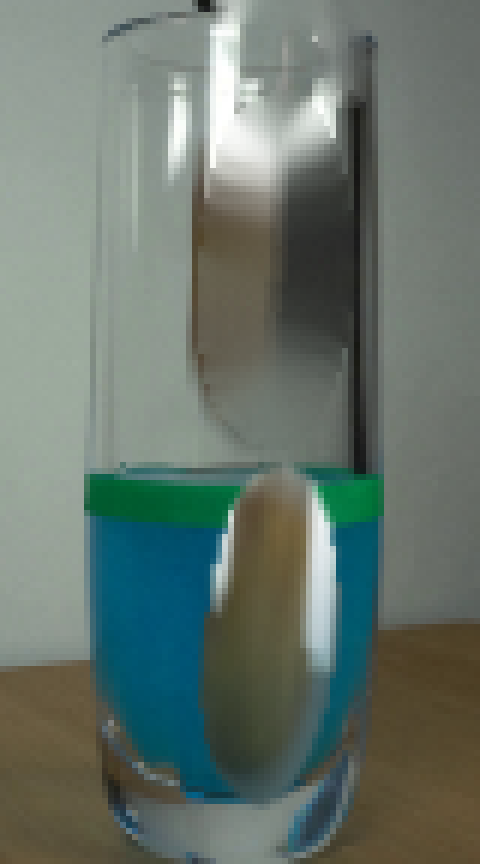
视觉工具实际返回图片 19
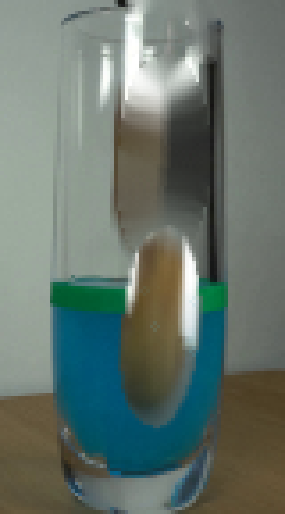
视觉工具实际返回图片 20
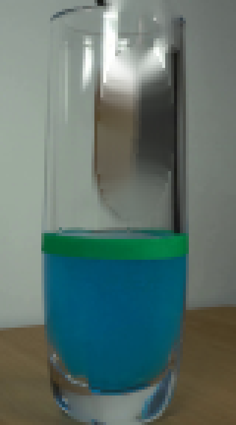
视觉工具实际返回图片 21
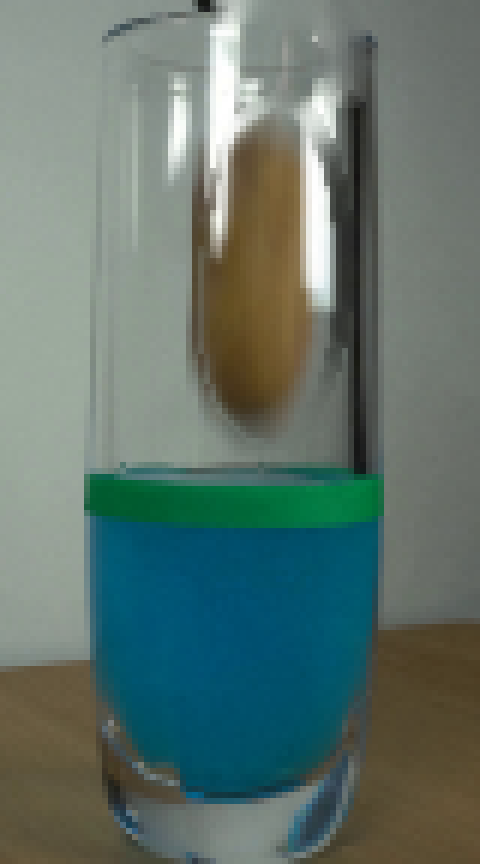
视觉工具实际返回图片 22
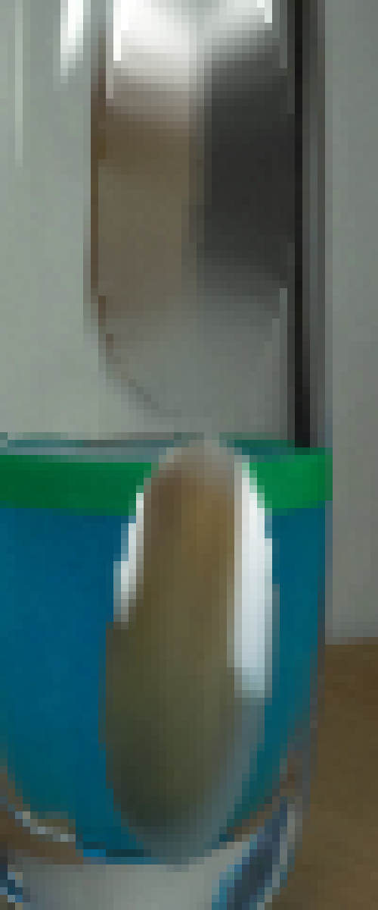
视觉工具实际返回图片 23
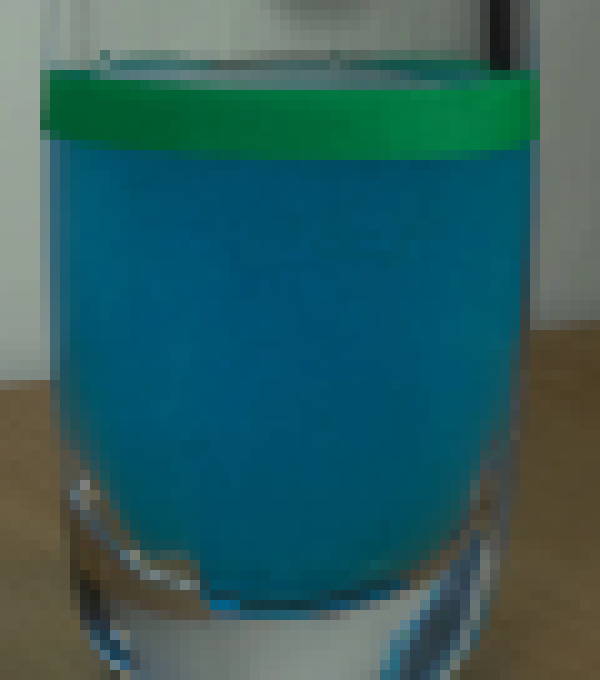
视觉工具实际返回图片 24
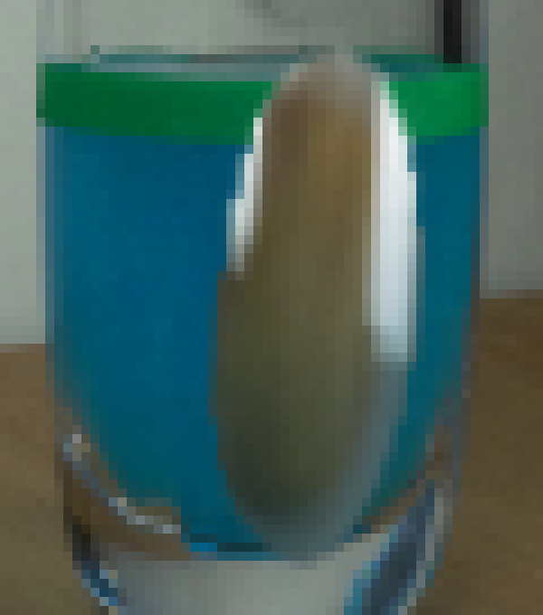
视觉工具实际返回图片 25
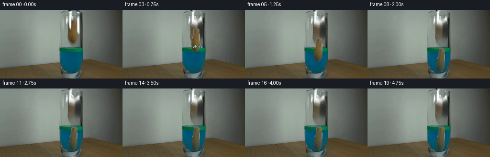
视觉工具实际返回图片 26
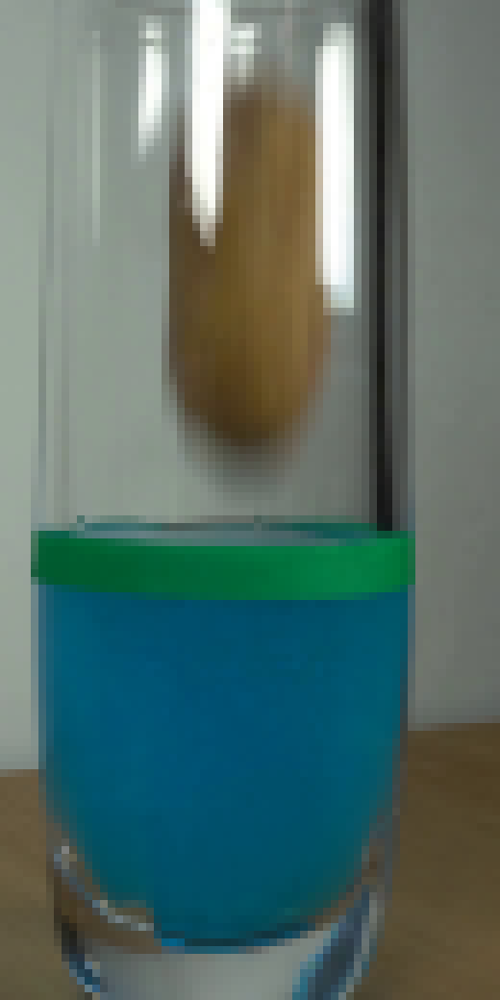
视觉工具实际返回图片 27
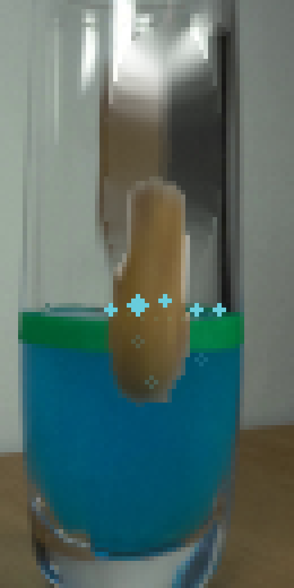
视觉工具实际返回图片 28
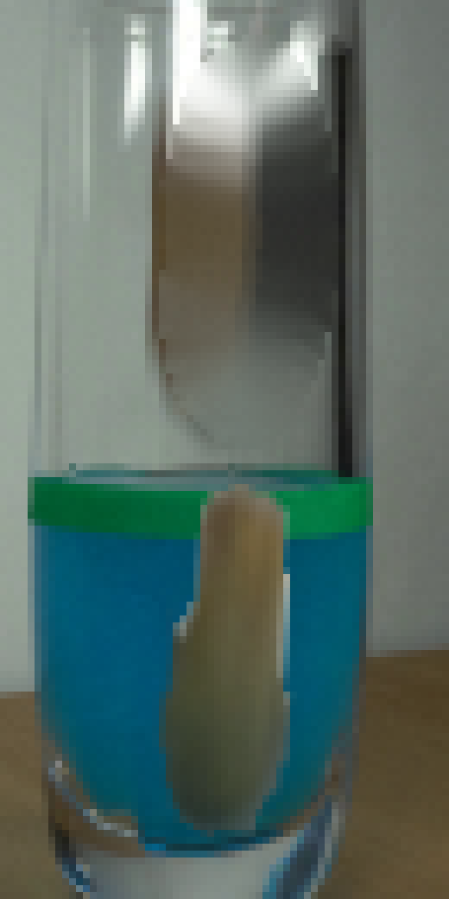
保存候选 6 份；完成命令 32 次；可验证图片返回 28 张。原始 API 响应与完整日志保留在本地。